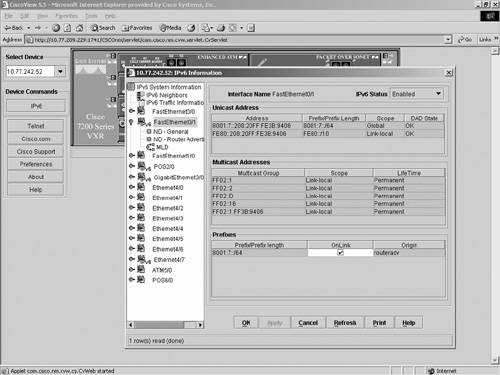
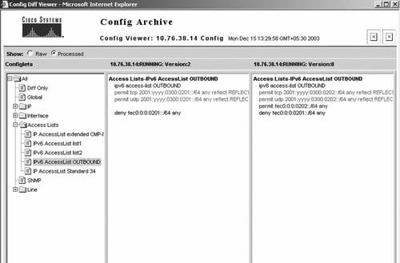
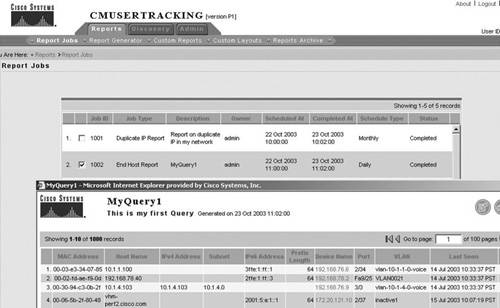

Management PlatformsNetwork-management platforms integrate all the management tools in one framework. The most popular (HP OpenView, Tivoli NetView) manage far more than the network, integrating application, processes, and so on. However, integrated platforms must rely on fully accepted standards to manage a wide range of heterogeneous devices. For the network, it is essentially SNMP and MIBs. As discussed in the "SNMP and MIBs" section, not all IPv6 MIBs are a published standard. The IPv6-only MIBs are published RFCs, and the plan is to deprecate them as soon as the corresponding generic MIBs (v4 and v6) are published. In that context, integrated management platforms have been slow IPv6 adopters. Some of the major vendors have not yet announced their IPv6 plans. Some, however, such as Cisco and HP, are now proposing some IPv6 support in their respective management suites. CiscoWorksCiscoWorks is a family of products based on Internet standards for managing Cisco networks and devices. The CiscoWorks product line offers a set of solutions designed to manage the enterprise network. These solutions focus on key areas in the network such as optimization of the WAN, administering switch-based LANs, securing remote and local virtual private networks, and measuring SLAs within all types of networks. The CiscoWorks product line includes a set of management components, bundled in solution offerings such as Small Network Management Solution (SNMS), LAN Management Solution (LMS), Network Analysis Module (NAM) for Cisco Catalyst 6500 and 6000 series, and so on. The list of major components is as follows:
Major releases of CiscoWorks components have been made IPv6 capable. Table 10-5 lists all CiscoWorks components and solutions and gives a status on IPv6.
CiscoWorks added support for IPv6 in the following areas:
CiscoView is a web-based management tool that provides dynamic status, statistics, and comprehensive configuration information for Cisco internetworking products (switches, routers, hubs, concentrators, and access servers). When the IPv6 device package is installed, CiscoView manages IPv6 functionality using Telnet/SNMP over IPv4 transport using dual stacks. IPv6 management features are launched from the device's context menu. CiscoView can provide the following IPv6 information:
Figure 10-17 illustrates IPv6 CiscoView interface management. Figure 10-17. CiscoView Interface ManagementRME consists of various applications such as inventory, configuration management, software management, availability, and syslog. Inventory uses SNMP credentials of the device to collect device information and manage it. To manage IPv6-enabled devices, the current RME version requires them to be dual stack, so that it can use the IPv4 addresses for management. Configuration management within RME provides configuration backup, view, update, and track capabilities. It can archive IPv6 configurations, configure IPv6 information on multiple devices, edit an IPv6 configuration, and periodically run show commands on IPv6 devices and store the output. Figure 10-18 shows how configuration can be archived and managed with RME. Figure 10-18. CiscoWorks RME (Config-viewer)NatKit (Network Analysis Toolkit) within RME is a suite of web-based troubleshooting tools integrated into a network desktop. NATkit collects network data through SNMP requests, Telnet commands, and syslog event messages to produce consolidated reports accessible through a web browser. Although no IPv6 NatKit support is available at the time of this writing, the plan is to support IPv6 in future versions. Campus Manager 4.0 provides support for IPv6 in the following network scenarios:
Campus Manager has been updated as follows for IPv6 support:
Figure 10-19 illustrates IPv6 support in Campus Manager for user tracking. Figure 10-19. CiscoWorks Campus Manager (User Tracking)Other Management PlatformsSeveral other network-management platforms are leaders in the IPv4 network-management arena, and their IPv6 readiness is key in IPv6 adoption. They are, namely, HP OpenView, NetView, and InfoVista. HP OpenViewHP OpenView is a framework that defines an architecture for managing hosts, applications, and a large variety of networking devices. OpenView Network Node Manager (NNM) handles the networking portion of OpenView. It is based on SNMP and provides a wide range of network-management features, such as device and topology discovery, device monitoring, and so on. Within OpenView NNM, Extended Topology discovers the existence of networking devices and creates maps. Starting with NMN 7.0, Extended Topology can also discover IPv6 devices and create maps showing layer 3 IPv6 nodes. It can then monitor the status of each of the discovered IPv6 devices. To discover the IPv6 devices, the most efficient way (sometimes the only way; see the section "Autodiscovery") is to configure the list of addresses to be discovered. To discover and monitor the IPv6 devices, Extended Topology relies on IPv6 MIBs and on IPv6 ping. Currently, the only IPv6 MIBs supported by HP OV are published RFCs (RFC 2465, RFC 2452, RFC 2554, RFC 2465, RFC 2566). Unified TCP and UDP MIBs have been published recently as RFC 4022 and RFC 4113, respectively, and other basic unified MIBs are about to become standard. Logically, both Cisco and HP OV will upgrade to the set of unified MIBs as soon as this happens. Tivoli NetViewIBM Tivoli NetView discovers and displays network topologies, correlates and manages events and SNMP traps, monitors network health, and gathers performance data. At the time of this writing, Tivoli NetView does not support IPv6. InfoVistaInfoVista software collects data from the IT infrastructure and generates reports on the performance and service achievements across all system elements (networks, systems, and applications). It provides traps, views (in real time), and reports. At the time of this writing, no IPv6 support is available for InfoVista. |